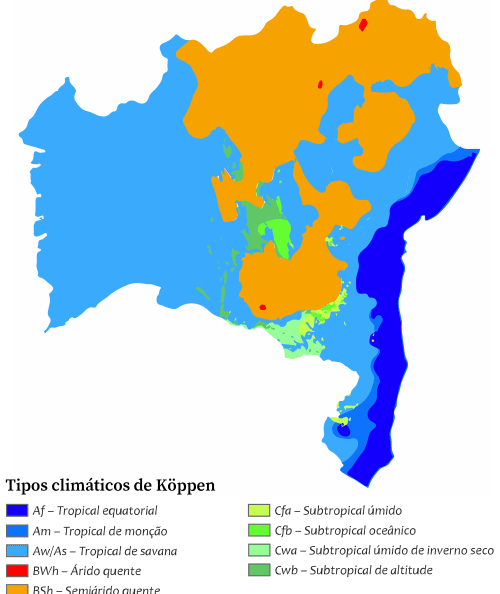
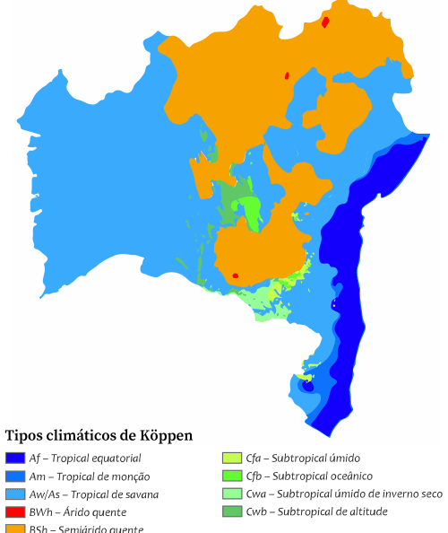

Onde fica a Bahia?
A Bahia é uma das 27 unidades federativas do Brasil. Banhada pelo Oceano Atlântico na costa mais extensa do país, está situada na Região Nordeste, onde representa a maior extensão territorial, a maior população, o maior produto interno bruto e o maior número de municípios. A capital estadual é Salvador. Além dela, há outros municípios influentes na rede urbana baiana, como as capitais regionais,Feira de Santana, Vitória da Conquista, Barreiras,Luís Eduardo Magalhães ,o bipolo Itabuna-Ilhéus e Juazeiro do bipolo com o município pernambucano de Petrolina, no sul do estado Eunápolis-Porto Seguro
Situada no sul da Região Nordeste, a Bahia limita-se com outros oito estados brasileiros — é o estado brasileiro que mais faz divisas. A leste, é banhada pelo Oceano Atlântico por 1 183 quilômetros, o que torna seu litoral o mais extenso de todos os estados do Brasil. Ocupa uma área de 564 760,429 km², sendo pouco maior que a França e o quinto estado brasileiro em extensão territorial. Com tal dimensão, possui 36,334% da área total da Região Nordeste do Brasil e 6,632% do território nacional. E de sua área total, cerca de 70 por cento situam-se na região do semiárido
Clima, Fauna e Flora
Devido à sua latitude, o clima tropical predomina em toda a Bahia, apresentando temperaturas elevadas, em que as médias de temperatura anuais, em geral ultrapassam os 27 graus Celsius, entretanto na serra do Espinhaço as temperaturas são mais amenas e agradáveis, podendo chegar aos 5 graus Celsius no inverno. Contudo, no sertão, o clima é o semiárido e árido. O clima árido só é encontrado no Raso da Catarina, região mais quente do Brasil, em que os índices pluviométricos são bastantes baixos, sendo comum os longos períodos de seca, onde se chega aos 43 graus Celsius, situado no nordeste da Bahia. O recorde de temperatura do Brasil foi de 50,4 graus Celsius no Raso da Catarina.
A fauna baiana é abundante e variada. Nas regiões de floresta úmida, especialmente no Parque Nacional do Descobrimento, podem ser encontradas espécies ameaçadas de extinção, como o macuco, que constitui uma ave da família das codornas. Dentre os mamíferos existem preguiças-de-coleira e onças-pintadas. Já no Parque Nacional da Chapada Diamantina podem ser encontradas muitas espécies de anfíbios, répteis e aves que somente tem na região.
A flora bahiana é bem diversificada, onde Cerca de 64% do território baiano é coberto por caatingas, 16% por cerrados, 18% por florestas tropicais. A caatinga se localiza em toda a região norte, na área da depressão do São Francisco, e na serra do Espinhaço, deixando para o cerrado apenas a parte ocidental, e para a floresta tropical úmida, o sudeste. No interior as estações de seca são mais marcantes, com exceção para região do vale do rio São Francisco. Na serra do Espinhaço as temperaturas são mais amenas e agradáveis. Os índices pluviométricos no sertão são bastantes baixos, podendo não chegar aos 300 milímetros anuais. Ali ocorrem comumente longos períodos de seca.
 
